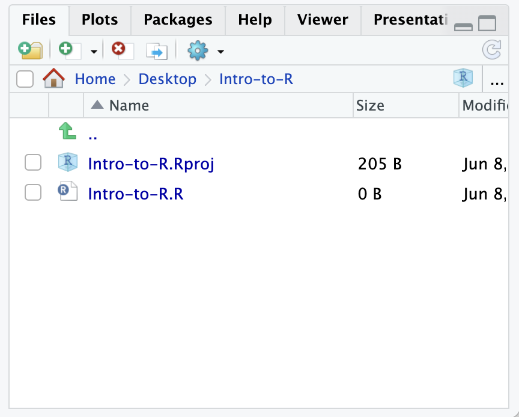
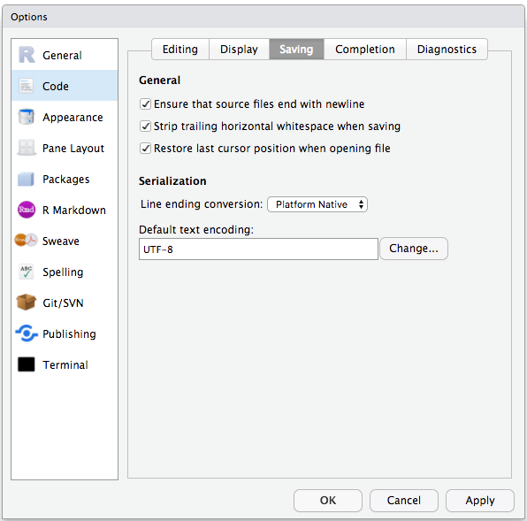
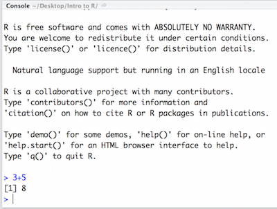
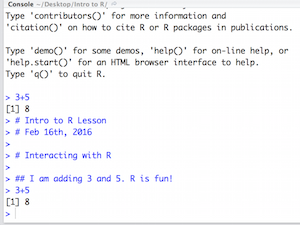

Lesson 1: Introduction to R and RStudio IDE
Learning Objectives
- Be able to describe the difference between R and RStudio
- Describe the purpose and use of each panel in RStudio IDE
- Be able to use common R syntax
What is R?
“R” is used to name a programming language and the software that reads and interprets the instructions written on the scripts of this language. Is specialized in statistical computing and graphics.
The R environment combines:
- effective handling of big data
- collection of integrated tools
- graphical facilities
- simple and effective programming language
Why learn R programming?

R is a powerful environment. It has a wide range of statistics and general data analysis and visualization capabilities.
- Data handling, wrangling, and storage
- Wide array of statistical methods and graphical techniques available
- Easy to install on any platform and use (and it’s free!)
- Open source with a large and growing community of peers
- R produces high-quality graphics that are reproducible
Example of R used in the media
- "At the BBC data team, we have developed an R package and an R cookbook to make the process of creating publication-ready graphics in our in-house style..." - BBC Visual and Data Journalism cookbook for R graphics
Where do we get R packages?
To take full advantage of R, you need to install R packages. R packages are loadable extensions that contain code, data, documentation, and tests in a standardized, easy to share format that can easily be installed by R users. The primary repository for R packages is the Comprehensive R Archive Network (CRAN).
CRAN is a global network of servers that store identical versions of R code, packages, documentation, etc (cran.r-project.org). To install a CRAN package, use:
install.packages("packageName")
Github is another common source used to store R packages; though, these packages do not necessarily meet CRAN standards so approach with caution. To install a Github packages use library(devtools) followed by install_github(). Many genomics and other packages useful to biologists / molecular biologists can be found on Bioconductor. Bioconductor and Bioconductor packages use BiocManager::install for installation; more on this later.
Run R using RStudio
R is a programming language and it "comes with an environment or console that can read and execute your code". R can be used via command line interactively, command line using a script, or interactively through an environment. This course will demonstrate the utility of the RStudio integrated development environment (IDE).
First time users often confuse R versus RStudio. At its simplest, R is like a car's engine while RStudio is like a car's dashboard as illustrated in the Figure below.

More precisely, R is a programming language that runs computations, while RStudio is a freely available open-source integrated development environment (IDE) that provides an interface by adding many convenient features and tools. So just as the way of having access to a speedometer, rearview mirrors, and a navigation system makes driving much easier, using RStudio's interface makes using R much easier as well.
RStudio provides an environment with many features to make using R easier and is a great alternative to working on R in the terminal.
- Graphical user interface, not just a command prompt
- Great learning tool
- Free for academic use
- Platform agnostic
- Open source
Creating a new project directory in RStudio
Let's create a new project directory for our "Introduction to R" lesson today.
- Open RStudio
- Go to the
Filemenu and selectNew Project. - In the
New Projectwindow, chooseNew Directory. Then, chooseNew Project. Name your new directoryIntro-to-Rand then "Create the project as subdirectory of:" the root of your home account (~). - Click on
Create Project. - After your project is completed, if the project does not automatically open in RStudio, then go to the
Filemenu, selectOpen Project, and chooseIntro-to-R.Rproj. - When RStudio opens, you will see three panels in the window.
- Go to the
Filemenu and selectNew File, and selectR Script. - Go to the
Filemenu and selectSave As..., typeIntro-to-R.Rand selectSave
The RStudio interface should now look like the screenshot below.

What is a project in RStudio?
It is simply a directory that contains everything related your analyses for a specific project. RStudio projects are useful when you are working on context- specific analyses and you wish to keep them separate. When creating a project in RStudio you associate it with a working directory of your choice (either an existing one, or a new one). A . RProj file is created within that directory and that keeps track of your command history and variables in the environment. The .RProj file can be used to open the project in its current state but at a later date.
When a project is (re) opened within RStudio the following actions are taken:
- A new R session (process) is started
- The .RData file in the project's main directory is loaded, populating the environment with any objects that were present when the project was closed.
- The .Rhistory file in the project's main directory is loaded into the RStudio History pane (and used for Console Up/Down arrow command history).
- The current working directory is set to the project directory.
- Previously edited source documents are restored into editor tabs
- Other RStudio settings (e.g. active tabs, splitter positions, etc.) are restored to where they were the last time the project was closed.
Information adapted from RStudio Support Site
Organizing your working directory & setting up
RStudio Interface
The RStudio interface has four main panels:
- Console: where you can type commands and see output. The console is all you would see if you ran R in the command line without RStudio.
- Script editor: where you can type out commands and save to file. You can also submit the commands to run in the console.
- Environment/History: environment shows all active objects and history keeps track of all commands run in console
- Files/Plots/Packages/Help is a handy browser for your current files, this is where your plots will appear, you can view package information, and much more.
Viewing your working directory
Before we organize our working directory, let's check to see where our current working directory is located by typing into the console:
getwd() # return an absolute filepath
# this is also our first example of a function
Your working directory should be the Intro-to-R folder constructed when you created the project. The working directory is where RStudio will automatically look for any files you bring in and where it will automatically save any files you create, unless otherwise specified.
You can visualize your working directory by selecting the Files tab from the Files/Plots/Packages/Help window.

If you wanted to choose a different directory to be your working directory, you could navigate to a different folder in the Files tab, then, click on the More dropdown menu which appears as a Cog and select Set As Working Directory.

What is a path?
According to Wikipedia, a path is "a string of characters used to uniquely identify a location in a directory structure."
Therefore, a file path simply tells us where a file or files are located. You will need to direct R to the location of files that you want to work with or output that you create.
The working directory is the location in your file system that you are currently working in. In other words, it is the default location that R will look for input files and write output files.
Structuring your working directory
To organize your working directory for a particular analysis, you should separate the original data (raw data) from intermediate datasets. For instance, you may want to create a data/ directory within your working directory that stores the raw data, and have a results/ directory for intermediate datasets and a figures/ directory for the plots you will generate.
Let's create these three directories within your working directory by clicking on New Folder within the Files tab.
When finished, your working directory should look like:

Setting up
This is more of a housekeeping task. In the future, we may be writing long lines of code in our script editor and want to make sure that the lines "wrap" and you don't have to scroll back and forth to look at your long line of code.
Click on Code -> Soft Wrap Long lines (make sure this is checked off)
In addition, to avoid character encoding issues between Windows and other operating systems, we are going to set UTF-8 by default:

Interacting with R
Now that we have our interface and directory structure set up, let's start playing with R! There are two main ways of interacting with R in RStudio: using the console or by using script editor (plain text files that contain your code).
Console window
The console window (in RStudio, the bottom left panel) is the place where R is waiting for you to tell it what to do, and where it will show the results of a command. You can type commands directly into the console, but they will be forgotten when you close the session.
Let's test it out:
3 + 5
How am I running the line without physically hitting Run? Does anyone know?

Script editor
Best practice is to enter the commands in the script editor, and save the script.
To create an R script, click File > New File > R Script. You can save your script by clicking on the floppy disk icon. You can name your script whatever you want, perhaps "Lesson_1". R scripts end in .R. Save your R script to your working directory.
You are encouraged to comment liberally to describe the commands you are running using #. This way, you have a complete record of what you did, you can easily show others how you did it and you can do it again later on if needed.
The Rstudio script editor allows you to 'send' the current line or the currently highlighted text to the R console by clicking on the Run button in the upper-right hand corner of the script editor.
Now let's try entering commands to the script editor and using the comments character # to add descriptions and highlighting the text to run:
# Intro to R Lesson
# Interacting with R
## I am adding 3 and 5. R is fun!
3+5
Alternatively, you can run by simply pressing the Ctrl and Return/Enter keys at the same time as a shortcut.
You should see the command run in the console and output the result.

What happens if we do that same command without the comment symbol #? Re-run the command after removing the # sign in the front:
I am adding 3 and 5. R is fun!
3+5
Now R is trying to run that sentence as a command, and it doesn't work. We get an error in the console "Error: unexpected symbol in "I am" means that the R interpreter did not know what to do with that command."
Console command prompt
Interpreting the command prompt can help understand when R is ready to accept commands. Below lists the different states of the command prompt and how you can exit a command:
Console is ready to accept commands: >.
If R is ready to accept commands, the R console shows a > prompt.
When the console receives a command (by directly typing into the console or running from the script editor (Ctrl-Enter), R will try to execute it.
After running, the console will show the results and come back with a new > prompt to wait for new commands.
Console is waiting for you to enter more data: +.
If R is still waiting for you to enter more data because it isn't complete yet,
the console will show a + prompt. It means that you haven't finished entering
a complete command. Often this can be due to you having not 'closed' a parenthesis or quotation.
Escaping a command and getting a new prompt: esc
If you're in Rstudio and you can't figure out why your command isn't running, you can click inside the console window and press esc to escape the command and bring back a new prompt >.
Keyboard shortcuts in RStudio
In addition to some of the shortcuts described earlier in this lesson, we have listed a few more that can be helpful as you work in RStudio.
| key | action |
|---|---|
| Ctrl+Enter | Run command from script editor in console with Windows or Linux |
| Command+Enter | Run command from script editor in console with MacOS |
| ESC | Escape the current command to return to the command prompt |
| Ctrl+1 | Move cursor from console to script editor |
| Ctrl+2 | Move cursor from script editor to console |
| Tab | Use this key to complete a file path |
| Ctrl+Shift+C | Comment the block of highlighted text |
Class Exercise
Try highlighting only 3 + from your script editor and running it. Find a way to bring back the command prompt > in the console.
Saving your R environment (.Rdata)
When exiting RStudio, you will be prompted to save your R workspace or .RData. The .RData file saves the objects generated in your R environment. You can also save the .RData at any time using the floppy disk icon just below the Environment tab. You may also save your R workspace from the console using save.image(). RData files are often not visible in a directory. You can see them using ls -a from the terminal. RData files within a working directory associated with a given project will launch automatically under the default option Restore .RData into workspace at startup. You may also load .Rdata by using load().
Best practices
Before we move to complex concepts and getting familiar with the language, we want to point out a few things about best practices when working with R which will help you stay organized in the long run:
- Code and workflow are more reproducible if you can document everything that we do. Your end goal is not just to "do stuff", but to do it in a way that anyone can easily and exactly replicate your workflow and results. All code should be written in the script editor and saved to file, rather than working in the console.
- The R console should be mainly used to inspect objects, test a function or get help.
- Use
#signs to comment. Comment liberally in your R scripts. This will help future you and other collaborators know what each line of code (or code block) was meant to do. Anything to the right of a#is ignored by R. - To provide details about your R session, use
sessionInfo()
Summary of Commands
# commands
# getwd() - get working directory
# setwd() - set working directory
# sessionInfo() - provides details about your current R session
Citation
To cite material from this course in your publications, please use:
Some materials used in these lessons were derived from work that is Copyright © Data Carpentry (http://datacarpentry.org/). All Data Carpentry instructional material is made available under the Creative Commons Attribution license (CC BY 4.0).
Other materials were derived from Babraham Bioinformatics - Training Courses. (n.d.). https://www.bioinformatics.babraham.ac.uk/training.html
NIH Bioinformatics Training and Education Program. "Introductory R for Novices". Last updated January 2026. https://bioinformatics.ccr.cancer.gov/docs/r_for_novices/